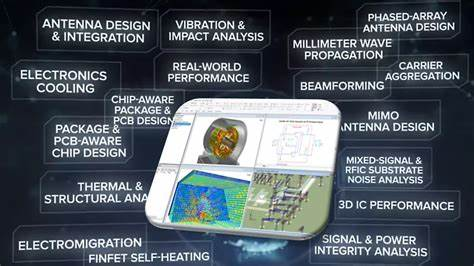

About PyAnsys and AEDT#
PyAnsys#
PyAEDT is part of the larger PyAnsys effort to facilitate the use of Ansys technologies directly from Python.
PyAEDT is intended to consolidate and extend all existing functionalities around scripting for AEDT to allow reuse of existing code, sharing of best practices, and increased collaboration.
About AEDT#
AEDT is a platform that enables true electronics system design. AEDT provides access to the Ansys gold-standard electro-magnetics simulation solutions, such as Ansys HFSS, Ansys Maxwell, Ansys Q3D Extractor, Ansys SIwave, and Ansys Icepak using electrical CAD (ECAD) and Mechanical CAD (MCAD) workflows.
In addition, AEDT includes direct links to the complete Ansys portfolio of thermal, fluid, and mechanical solvers for comprehensive multiphysics analysis. Tight integration among these solutions provides unprecedented ease of use for setup and faster resolution of complex simulations for design and optimization.
PyAEDT is licensed under the MIT License.
PyAEDT includes functionality for interacting with the following AEDT tools and Ansys products:
HFSS and HFSS 3D Layout
Icepak
Maxwell 2D, Maxwell 3D, and RMXprt
2D Extractor and Q3D Extractor
Mechanical
Nexxim
EDB
Twin Builder
Dependencies#
To run PyAEDT, you must have a local licensed copy of AEDT. PyAEDT supports AEDT versions 2022 R2 and later.
Student version#
PyAEDT supports AEDT Student versions 2022 R2 and later. For more information, see the Ansys Electronics Desktop Student - Free Software Download page on the Ansys website.
Why PyAEDT?#
A quick and easy approach for automating a simple operation in the AEDT UI is to record and reuse a script. However, here are some disadvantages of this approach:
Recorded code is dirty and difficult to read and understand.
Recorded scripts are difficult to reuse and adapt.
Complex coding is required by many global users of AEDT.
Here are the main advantages that PyAEDT provides:
Automatic initialization of all AEDT objects, such as desktop objects like the editor, boundaries, and more
Error management
Log management
Variable management
Compatibility with IronPython (limited) and CPython
Simplification of complex API syntax using data objects while maintaining PEP8 compliance.
Code reusability across different solvers
Clear documentation on functions and API
Unit tests of code to increase quality across different AEDT versions